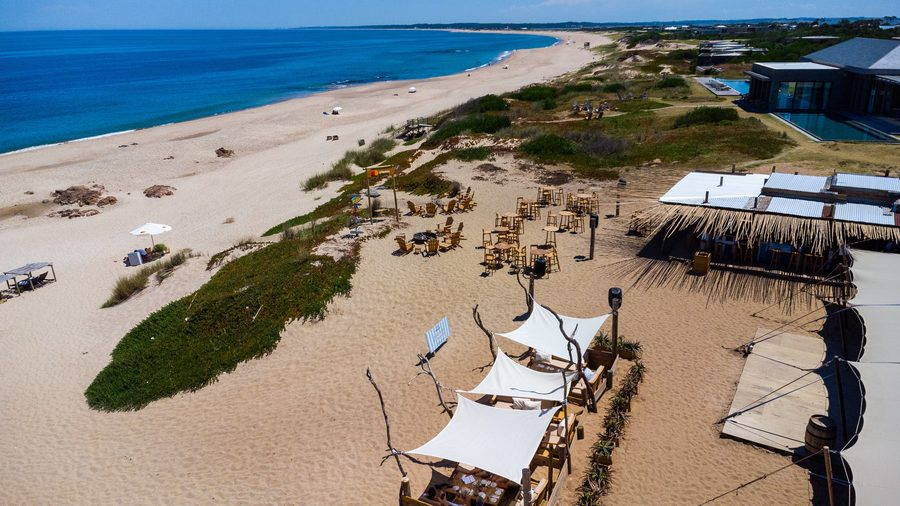
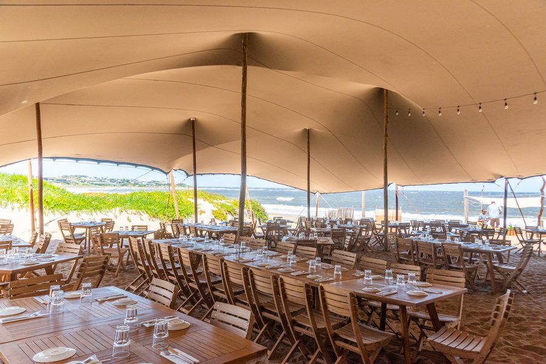
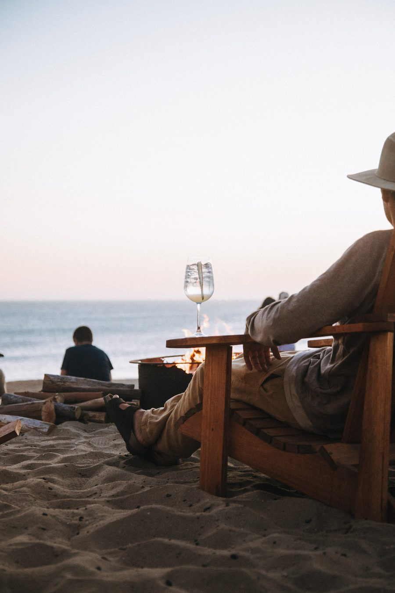

La Susana
Feet in the sand, under the bamboo pergolas. Lunch that runs into sunset, and sunset that runs into the bonfire.
The nights
Drag · five setsThe quintessential José Ignacio vibe.
In the sand of Playa Mansa, in the shade of bamboo pergolas, with the sun coming lightly through and the ocean running from Punta del Este to the lighthouse.
The table06
The afternoon
does not end
Lunch runs long, the light drops, the music comes up and the fire is lit. One table, four different restaurants, depending on when you sit down.
Lunch
Feet in the sand, under the pergolas, with the sea in front.
Sunset
Specialty drinks and the hour the place is named for.
Dinner
The fire, the coast, and the Viña VIK cellar.
Bonfire
On the beach, for as long as it lasts.

Fresh, local, and treated simply.
Produce from the southern Atlantic coast and from the local organic farm, put together in a creative yet simple way — a menu that changes with what comes in that morning.
The full Viña VIK cellar sits behind it, from the estate in Millahue.
What comes with the table.
Pergolas, sand, and the long afternoon.

The terrace Under the bambooFrom the kitchen
Under the bambooFrom the kitchen The bonfire
The bonfire
Playa Mansa
The beachTake in the music and experience nature's perfect art in the ever changing sunset — described as the best on the planet.La Susana · José Ignacio
In the sand, on the calm side.
La Susana sits on Playa Mansa, minutes from the lighthouse and a walk along the beach from Bahía VIK.
A table, and the rest of the afternoon.
Lunch fills first in January. Sunset fills every day.
A table, and the rest of the afternoon.
Lunch fills first in January. Sunset fills every day. Tell us the day and the hour and someone answers — not a form.
Book Your Table→